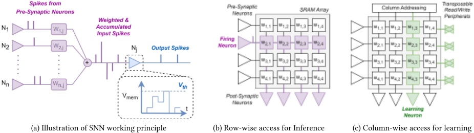
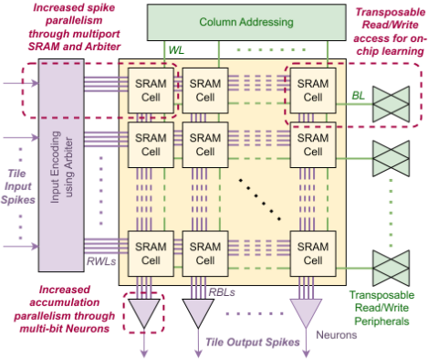
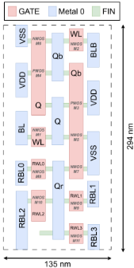
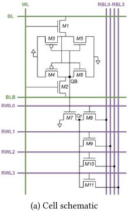
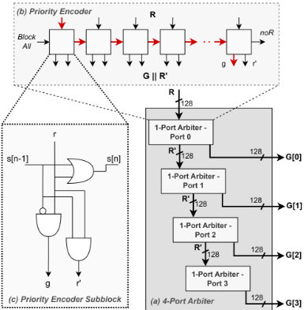
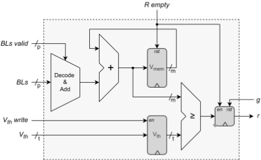
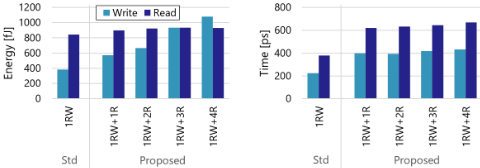
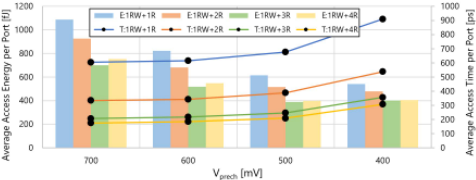
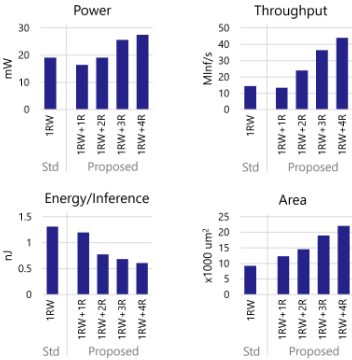

ESAM：基于 3nm FinFET 多端口 SRAM CIM、支持在线学习的高能效 SNN 架构
面向边缘 AI 的 SRAM 存内计算（CIM-P）型 SNN 加速器长期受限于每次只能访问一行导致的低并行度、庞大的 spike 仲裁开销，以及在线学习所需的行列双向访问难题。论文提出 ESAM 架构，在 IMEC 3nm FinFET 上设计 1RW+4R 等多端口 SRAM 单元：读端口通过仅栅极连接的 M7 管与存储节点解耦，几乎不影响单元稳定性，并支持将 Vprech 降到 VDD 以下以省电；原 6T 单元的 WL/BL 转置布线实现列向读写以支持在线学习；配合树状 Priority Encoder Arbiter 在单周期内完成最多 4 个 spike 请求的仲裁，以及带 validity flag 的 IF Neuron 阵列。128×128 阵列仿真显示速度提升 3.1×、能效提升 2.2×；768:256:256:256:10 的 Binary-SNN 在 MNIST 上达到 97.64% 准确率，系统级吞吐 44 MInf/s、能耗 607 pJ/Inf、功耗 29 mW。代价是 1RW+4R 单元面积为 6T 的 2.625×、系统面积增大 2.4×，且阵列规模受 NBL assist 良率约束限制在 128×128 以内。
边缘设备的 AI 计算受 memory-wall 制约；现有 SRAM-based CIM-P 型 SNN 加速器每次只能访问一行、每 timestep 仅一个前突触神经元可发放，并行度低，且 spike 仲裁系统庞大、每 spike 需多个时钟周期；在线学习需要行向读、列向读写的 Transposable 访问，而已有方案要么在阵列中增加额外硬件、损害单元稳定性，要么导致读写慢、功耗高。
提出 ESAM 架构： 多端口 SRAM 单元（1RW+1R/2R/3R/4R）在 6T 基础上经仅栅极连接的 M7 管引出解耦读端口（Qr→RBL0-RBL3），降低对单元稳定性的影响并允许 Vprech 低于 VDD 以节省功耗； 将原 6T 的 WL 竖置、BL/BLB 横置形成 Transposable 端口，实现列向读写以支持在线学习； Arbiter 由四个级联的 1-port Fixed Priority Encoder 构成，并用多级短 Priority Encoder 的树状结构替代单一长编码器以缩短关键路径，在单时钟周期内仲裁最多 p=4 个 spike 请求； Neuron 阵列用 validity flag 屏蔽未使用端口、将有效读出解码为 +1/-1 后累加到 V_mem 寄存器并与 per-neuron V_th 比较；写操作采用 NBL assist。整体在 IMEC 3nm FinFET 上完成版图与综合，并在 Python 中按 spike 粒度做系统级时序/功耗/能耗仿真。
128×128 阵列（3nm FinFET）相比传统单端口 SRAM 设计：速度提升 3.1×，能效提升 2.2×
系统级（MNIST，768:256:256:256:10 Binary-SNN）：吞吐 44 MInf/s，能耗 607 pJ/Inf，功耗 29 mW，准确率 97.64%
1RW+1R/2R/3R/4R 单元面积分别为标准 6T（0.01512 μm²）的 1.5×/1.875×/2.25×/2.625×；采用 1RW+4R 单元的系统面积是标准 1RW 方案的 2.4×
树状 Arbiter 以 8.0% 面积开销将 128 宽 4 端口仲裁的关键路径从 >1100 ps 降到 <800 ps
NBL assist 的 VWD < -400 mV 良率约束将所有单元设计的阵列规模限制在 ≤128 行×128 列
结论中称系统每秒推理数（Inferences per second）较此前提升四个数量级
相对已有工作的区别： 用栅极耦合的解耦读端口实现多 spike 并行读取，避免 Adder Tree 方案的硬件开销，也避免近似计算方案牺牲分类精度； 解耦端口使 Vprech 可低于 VDD，带来 active 功耗节省； 在同一单元内同时实现行向多读与列向读写，无需在阵列中增加额外硬件即可支持在线学习； 用纯逻辑级联/树状 Priority Encoder 在单时钟周期内完成多端口 spike 仲裁，替代以往需多时钟周期的庞大仲裁系统。
相关度级别：low
命中能力域：无明显对应
理由：论文核心是面向边缘 AI 的定制多端口 SRAM bitcell、CIM 宏与 SNN 加速器的电路/宏级设计，属于存内计算与神经形态计算方向；本团队的产品与技术栈是 LPDDR/DDR5/MRDIMM/HBM4/UCIe 等接口 IP 的架构、RTL 与验证交付。论文不涉及 UVM/覆盖率/形式验证/emulation 等任何验证方法学内容（2.4~2.7 均无对应）；其定制 bitcell 与神经形态计算宏架构不属于 2.1 所定义的内存/互连 IP 架构范畴；2.2/2.3 仅有 Arbiter 关键路径优化、逻辑综合与流水线级时序分析等通用数字设计内容，不构成对任一能力域核心技术的直接命中，故判定为 low。可借鉴点仅限通用的树状短 Priority Encoder 缩短关键路径思路，以及多端口 SRAM 在 3nm 节点的面积/时序/功耗权衡数据。
建议动作：仅了解结论
ESAM：采用3nm FinFET多端口SRAM存内计算（CIM）并支持在线学习的高能效脉冲神经网络（SNN）架构
Lucas Huijbregts 1,2 , Liu Hsiao-Hsuan 2 , Paul Detterer 2 , Said Hamdioui 1 , Amirreza Yousefzadeh 3,2 , Rajendra Bishnoi 1
1 代尔夫特理工大学，2 IMEC，3 特文特大学
{l.c.a.huijbregts,s.hamdioui,r.k.bishnoi}@tudelft.nl,samantha.liu@imec.be,paul.detterer@imec.nl,a.yousefzadeh@utwente.nl
当前的人工智能（AI）计算系统面临诸多挑战，主要源于存储墙问题，该问题限制了整体系统级性能，对于电池预算受限的边缘设备（如智能手机、可穿戴设备和物联网传感器系统）而言尤为突出。本文提出了一种新的基于静态随机存取存储器（SRAM）的存内计算（CIM）加速器，专为脉冲神经网络（SNN）推理而优化。我们提出的架构采用多端口SRAM设计，配备多个解耦的读端口以提升吞吐量，并采用可转置读写端口以支持在线学习。此外，我们还开发了一个仲裁器（Arbiter）电路，用于在计算过程中实现高效的数据处理与端口分配。在3nm FinFET工艺下，128 × 128阵列的结果表明，与传统单端口设计相比，我们提出的多端口SRAM设计在速度上提升了3.1倍，能效提高了2.2倍。在系统级，实现了44 MInf/s的吞吐量，能耗为607 pJ/Inf，功耗为29mW。
人工智能（AI）应用在智能手机、可穿戴设备以及各类物联网（IoT）系统等电池供电的边缘设备上运行的需求正迅速增长。这些设备处理大量需要通过AI算法进行处理的数据。由于传输原始数据可能非常耗能，并会引入更高的延迟和隐私风险，因此对直接在边缘设备上（部分）执行AI应用的需求日益增长。目前针对低功耗边缘AI所探索的主要解决方案涉及神经形态计算以及脉冲神经网络（SNN）的利用。该方法利用大规模并行操作，集成了存内计算（CIM）、基于事件的计算以及降低参数精度等先进技术 [1]。神经形态加速器的主要挑战在于提升乘累加（MAC）运算的速度与效率。
在数字CIM中，突触权重存储在静态随机存取存储器（SRAM）中，其中MAC运算主要
允许免费制作本作品全部或部分的数字或硬拷贝以供个人或课堂使用，前提是此类拷贝并非出于营利或商业利益的目的而制作或分发，且拷贝必须在首页带有本声明及完整的引用信息。本作品中第三方组件的版权必须得到尊重。对于所有其他用途，请联系所有者/作者。
通过加法树（Adder Tree）及其变体 [2 - 5]，或在SRAM外围电路中采用顺序累加的存内乘法（Multiplication In-Memory, CIM-P）[6 - 9] 来实现。加法树能够增强并行性，但代价是破坏SRAM结构并引入可观的硬件开销。相比之下，基于SRAM的CIM-P设计将硬件开销降至最低，并能高效利用脉冲神经网络（SNN）的稀疏性，但其代价是突触前神经元维度上的并行度降低。这是因为在典型的SRAM数字设计中，每次只能访问一行，导致每个时间步（timestep）只能有一个突触前神经元发放。诸如 [9] 之类的实现试图通过近似计算来解决这一问题，但这会损害分类精度。CIM-P的另一个挑战涉及脉冲仲裁（spike arbitration），即确保每个时间步只有一个脉冲进入SRAM。通常，这些仲裁系统规模庞大，且每个脉冲需要多个时钟周期 [6]。此外，片上学习（on-chip learning）是SNN的一种流行做法，能够适应动态环境并使用较小的数据集进行训练。借助可转置SRAM，片上学习的执行效率会大幅提升，因为它便于按行和按列两个方向访问存储单元 [7 , 10 - 13]。然而，大多数方法要么需要在SRAM阵列中增加额外的硬件组件，要么会对单元稳定性产生不利影响，要么导致缓慢且高功耗的读/写（Read/Write）操作。因此，迫切需要一种高性价比的基于SRAM的存内计算（CIM）解决方案，它能够在不牺牲分类精度的前提下提供高度并行性，并支持高效的片上学习。
在本文中，我们提出了一种面向低功耗边缘AI（Edge AI）应用、采用CIM的基于SRAM的SNN加速器，称为ESAM。为解决上述现有最先进技术存在的问题，我们实现了：
配备多个解耦的读端口；
多端口SRAM单元以及仲裁器（Arbiter）电路和其他外围电路均采用IMEC的3nm FinFET工艺设计。对一个128 × 128阵列的仿真结果表明，与标准单端口SRAM设计相比，我们提出的SNN架构可将SNN计算速度和能效分别提升3.1倍和2.2倍。在系统级采用所提出的设计并执行手写数字分类应用，可实现44 MInf/s的吞吐量，能耗仅为607 pJ/Inf，功耗为29 mW。
本文其余部分的组织结构如下：第2节介绍SNN的基础知识以及可转置交叉开关存储器（Transposable crossbar memory）的概念。第3节介绍所提出的加速器架构及不同的SRAM单元选项，随后第4节进行评估。最后，第5节对全文进行总结。

脉冲神经网络（SNN）通过引入一种更具生物学启发性的模型，相较于传统神经网络[14]实现了重大进步：神经元通过离散脉冲进行通信，增强了信息处理的时间维度特性，并能够对动态数据中的复杂模式进行更高效的建模。这些脉冲提升了信息承载能力，并促进了基于事件的计算，从而将能耗降至最低。图1(a)展示了一个SNN的可视化示例。图中展示了一个积分发放（IF）神经元，该神经元将加权脉冲累积为其膜电位（ 𝑉 𝑚𝑒𝑚 ），当 𝑉 𝑚𝑒𝑚 超过其阈值电位时发出一个脉冲，即 𝑉 𝑚𝑒𝑚 ≥ 𝑉 𝑡ℎ 。此类SNN的数字实现具有诸多优势，包括更高的能效、并行处理能力以及与硬件加速的兼容性，使其特别适合边缘计算等领域中的实时、低功耗应用。在数字存内计算（CIM）中，突触权重被映射到存储器交叉开关上，如图1(b)所示。其中，乘累加（MAC）操作主要通过基于加法树（Adder Tree）的设计[2-5]或通过SRAM外围电路（CIM-P）中的顺序累加[6-9]来实现。
片上学习是SNN中的一种普遍做法，它使网络即使在部署之后仍能持续学习，从而确保对不断变化环境的适应性。为实现高效的片上学习，能够在突触前和突触后两个维度上访问突触权重至关重要 [16-18]。推理需要在突触前维度上进行读取，该维度对应于存储器的一行，如图1(b)所示。相反，SNN中的学习通常发生在突触后神经元出现特定条件时。因此，权重更新应施加于学习神经元之前的所有突触，这些突触与存储器的一列相关联，如图1(c)所示。总体而言，行方向的读取访问和列方向的读/写访问分别对SNN推理和片上学习至关重要。能够在行方向和列方向两个方向上进行访问的SRAM被称为可转置SRAM（Transposable SRAM）。
在本节中，我们将介绍所提出的SNN加速器。我们首先对完整的ESAM（Energy-efficient SNN Architecture for Multiport SRAM，面向多端口SRAM的高能效SNN架构）系统进行概述。随后，我们对各创新性子系统组件进行更详细的说明：位单元（bitcell）设计、仲裁器（Arbiter）以及神经元（Neuron）设计。
As discussed, SRAM-based Computational-In-Memory (CIM) employing Adder Trees to perform the MAC operation results in substantial hardware overhead. Conversely, CIM-P designs reduce hardware overhead and efficiently leverage the sparsity of SNNs; however, they suffer from significantly lower parallelism. The issue lies in the fact that conventional SRAM-based CIM-P designs access memory rows one by one to execute the MAC operation. To enhance the parallelism in the CIM-P architecture, we enable multiple simultaneous accesses to the array through novel multiport processing configurations. This improvement requires addressing input encoding, considering the random nature of input spikes, and managing the accumulation process during MAC operations. To tackle these aspects, we introduce an innovative Arbiter-based encoding scheme and a novel Neuron design capable of handling multiple accesses. Additionally, these multiport capabilities simplify the Transposable arrangements necessary for on-chip learning.
Figure 2 presents a Macro-level overview of the architecture, illustrating the composition of a single CIM-P Tile. Each Tile executes the MAC operation, involving incoming input spikes and the synapse weights stored in the SRAM array. Multiple Tiles can be integrated to constitute a multi-layer neural network. To create a fully connected neural network, Tiles can be cascaded directly, and spikes are transmitted fully in parallel as binary pulses between the Tiles, negating the need for decoding or routing the spikes. Each Tile contains three novel components, highlighted in Figure 2: the Arbiter, the SRAM cells, and the Neuron Array. The Arbiter processes requests for sending spikes and accommodates up to p
ESAM: Energy-efficient SNN Architecture using 3nm FinFET Multiport SRAM-based CIM with Online Learning


( 𝑝 = 4 in Figure 2) spike requests per clock cycle, resulting in the activation of corresponding Inference Wordlines (RWLs, depicted in purple). The Read outputs are then conveyed on the Inference Bitlines (RBLs), which then proceed to the Neurons. At the Neurons, these outputs are added together in parallel, after which they determine changes in the membrane potentials 𝑉 𝑚𝑒𝑚 . Moreover, as depicted in Figure 2 in green, the Transposed Wordlines (WL) and Bitlines (BL) enable column-wise Read/Write access to the SRAM array. This notably decreases the number of operations required to update a column of synapse weights, thereby enhancing the overall efficiency of on-chip learning.
为了提升并行度并提高该架构的吞吐量，我们通过多端口 SRAM 单元设计实现了更高的可访问性，该设计具有多个读（Read）端口，能够并行处理多个脉冲（spike）。此外，为了提高在线学习的效率，我们还需要额外的按列访问能力。因此，为满足这些需求，我们提出了一种新的多端口单元设计，其中包含一个专用的按列读/写（Read/Write）端口和多个按行读端口。
图 3(a) 展示了我们提出的 1 个读/写加 4 个读（1RW+4R）SRAM 单元的电路原理图。原始的 6T SRAM 单元（由晶体管 M1-M6 组成）保持不变；然而，与常见惯例不同，其字线（Word Line, WL）垂直布置，而位线（Bit Line, BL）和反相位线（Bit Line Bar, BLB）水平布置，从而实现按列的读/写访问。M7 通过反相的单元内容节点 QB 提供对单元内容的访问。当 QB 为 '1' 时，Qr 通过 M7 被放电至 VSS，这意味着它实际上镜像了单元的内容 Q。随后，M8-M11 根据新增字线 RWL0-RWL3 中哪一条被置为 '1'，将 Qr 连接至新增位线 RBL0-RBL3 之一。在执行读操作时，将新增位线 RBLx 预充电至 𝑉 𝑝𝑟𝑒𝑐ℎ。当相应的 WLx 被驱动为 '1' 时，相应的访问
135 nm
(b) 单元版图（采用 IMEC 的 3nm FinFET）

晶体管导通。根据 QB 的状态，RBLx 随后或者保持在 𝑉 𝑝𝑟𝑒𝑐ℎ，或者被放电至 VSS，随后对该结果进行感测。
通过仅将 M7 的栅极（Gate）连接到单元内容，便形成了一个去耦端口。这将新增端口对单元稳定性的影响降至最低。它还使我们能够将 𝑉 𝑝𝑟𝑒𝑐ℎ 缩放至低于 VDD 的数值，而对单元稳定性的影响几乎可以忽略不计。这以较慢的预充电为代价实现了功耗节省。图 3 展示了 1RW+4R 单元，它具有四个专用的去耦读端口和一个标准的读/写端口。与此类似，我们还设计了 1RW+1R、1RW+2R 和 1RW+3R，它们分别具有一个、两个和三个去耦读端口，并各配有一个标准的读/写端口。通过移除位线、字线和访问晶体管，即可从图 3(a) 的结构推导出这些单元。1RW+4R 单元的版图如图 3(b) 所示。
为了感测转置端口的 BL/BLB，我们采用了传统的基于电压的差分灵敏放大器（Sense Amplifier），并使用了 4 倍的行复用（row-muxing）以匹配 SRAM 的行间距。对于 RBL0-RBL3 的单端读取，我们采用了级联的基于反相器的灵敏放大器，以便匹配 SRAM 的列间距，其读出结果比传统灵敏放大器略慢。
仲裁器（Arbiter）设计用于管理脉冲请求，以最大化端口利用率并处理更多数量的脉冲，从而提升 CIM-P 架构的整体并行度。仲裁器接收脉冲请求向量 𝑅 作为输入。该向量中的 '1' 指示哪些 SRAM 字线（Wordline）上存在待处理的脉冲请求。图 4(a) 展示了 4 端口仲裁器的结构，它由四个级联的 1 端口仲裁器构成。在本工作中，1 端口仲裁器被实现为固定优先级编码器（Fixed Priority Encoder）。该优先级编码器在图 4(b) 中以高亮标出。它由一串相同的基于逻辑的子模块构成，在图 4(c) 中以高亮标出。
优先级编码器接收 𝑅 并选择向量中最左侧的 '1'，生成独热（one-hot）的授权（Grant）向量 𝐺。信号 𝑠[𝑛] 用于阻止位于选择位置右侧更远处的任何请求。如果 𝑅 不包含任何脉冲，则将 𝑛𝑜𝑅 置为 '1'。向量 𝑅′ 与 𝑅 相同，只是被选中的脉冲被屏蔽掉。这些未被授权的脉冲 𝑅′ 以级联方式传递给后续的 1 端口仲裁器，从而将系统扩展至多端口，并在单个时钟周期内生成多个 𝐺 向量。

原则上，优先级编码器本身即可用作仲裁器，如图 4 所示。然而，对于行数超过 128 的完整 SRAM 阵列，这会导致优先级编码器内部的关键路径过长，在图 4(b) 中以红色高亮标出。为缓解这一问题，实际实现中 1 端口仲裁器并非实现为单个优先级编码器，而是将多个较短的优先级编码器以树形结构组合而成。多个较短的底层优先级编码器处理实际的请求向量 𝑅，而更高层级的优先级编码器则在这些底层优先级编码器之间进行仲裁。请注意，底层与更高层级的优先级编码器仍采用与图 4(b) 所示相同的结构。以 8.0% 的面积开销为代价，对于 128 位宽的 4 端口仲裁器，这将关键路径从 >1100 𝑝𝑠 缩短至 <800 𝑝𝑠。
图 5 展示了神经元（Neuron）子组件的高层概览。本工作选用了积分发放（Integrate-and-Fire, IF）神经元，因为测试设置涉及一个时间静态的分类任务。神经元接收来自 SRAM 阵列的 𝑝 条多端口位线（Bitline）的感测数据，以 {'1'/'0'} 表示。对于每条位线，使用一个有效标志来指示每个时钟周期中实际使用了哪些存储器端口。这确保了未被使用的端口不会被错误地读取为 '1' 并累加到膜电位上。有效的位线被译码为 {'+1'/'-1'}，相加后再累加到 𝑚 位的 𝑉𝑚𝑒𝑚 寄存器上。每个单独神经元的 𝑉𝑡ℎ 存储在其各自的 𝑡 位寄存器中。当一个 Tile 的所有输入脉冲都已被仲裁器服务完毕后，R_empty 变为 '1'，从而启用 𝑉𝑚𝑒𝑚 与 𝑉𝑡ℎ 的比较。如果 𝑉𝑚𝑒𝑚 ≥ 𝑉𝑡ℎ，神经元输出寄存器 𝑟 被置为 '1'，以表示向后续 Tile 发送脉冲的请求。

与此同时，𝑉𝑚𝑒𝑚 被复位为零，以重新开始累积脉冲。如果神经元的脉冲请求 𝑟 获得授权（𝑔 = '1'），则 𝑟 被复位为 '0'。
表 1 总结了本工作所采用的实验设置。需要注意的是，为了改善 SRAM 的写（Write）操作，本文采用了负位线（Negative BL, NBL）辅助技术 [19]，该技术在互补位线上产生一个被降低的电压（𝑉𝑊𝐷 < 𝑉𝑆𝑆），以迫使存储单元进入目标状态。由于在更小的工艺节点下寄生效应较高，该技术是必不可少的。针对不同的阵列规模确定了所需的 𝑉𝑊𝐷，如果 𝑉𝑊𝐷 需要低于 -400 𝑚𝑉，则该阵列规模因预期良率过低而被视为不适合用于实现 [19]。这一限制将所有单元设计的阵列规模限制在行数与列数均 ≤ 128。
综合（synthesis）结果与 SRAM 宏（SRAM Macro）的结果相结合，被用于在 Python 中以逐脉冲（spike-by-spike）的方式对网络进行仿真，从而确定系统级的时序、功耗与能耗。
From layout, we have observed that the area of standard 6T is 0 . 01512 𝜇𝑚 2 [20]. The areas of the 1RW+1R, 1RW+2R, 1RW+3R and 1RW+4R cells are 1 . 5 × , 1 . 875 × , 2 . 25 × and 2 . 625 × larger respectively. We explored the possibility of adding 5+ ports, but only 4 Bitlines could match the pitch of the 4-port cell. Adding another port would require further widening of the cell, increasing the area by 87.5% of the 6T cell, making it too area-inefficient.
| Parameter | Specification |
|---|---|
| Technology Node | IMEC 3nm FinFet |
| Supply Voltage | 700 𝑚𝑉 ( 𝑉 𝑝𝑟𝑒𝑐ℎ = 500 𝑚𝑉 , for single-ended) |
| Simulation | Cadence Spectre |
| Synthesis | Cadence Genus |
| Parasitics Extraction | Calibre PEX + Line Geometries and Node Datasheets |
| Process Variation | ± 3 𝜎 |
| SRAM Target Cell | Worst-case Cell/Row/Column |
| Parameter | Specification |
ESAM: Energy-efficient SNN Architecture using 3nm FinFET Multiport SRAM-based CIM with Online Learning
Figure 6 shows the time and energy measurements for Writing to the cell and Reading from the cell using the Transposed port (WL and BL/BLB). Write time is the delay between the start of the Write process and the cell content flipping to 90% of its intended value. Read time is the delay between the Wordline being driven and the data output of the Sense Amplifier flipping. Additionally, Write energy is the energy consumed during the Write time, while Read energy is the energy consumed during a full clock cycle, which includes precharging of the BL/BLB [21].
As expected, both the Write and Read operation results scale with the addition of ports due to the parasitics that these ports introduce. The effect is stronger for the Write operation, as the parasitics also require a lower value of 𝑉 𝑊𝐷 when more ports are added, increasing the voltage differential and consequently the power consumption. Note also that when just one extra Inference Port is added, there is an immediate and significant increase in both Write and Read times of the Transposed port. This is because the WL wire in the proposed cells is narrower and thus more resistive, which is necessary due to the new RBL0-RBL3 that have to be routed in the same metal layer.
Figure 7 demonstrates the relationship between access time and energy consumption for different 𝑉 𝑝𝑟𝑒𝑐ℎ levels and different numbers of ports in the SRAM. The results are shown for full utilization of all available ports, meaning that if a cell has 𝑝 ports, 𝑝 Read operations are performed. Total access time is calculated as the sum of the precharge time and the Read time.


Vprech
为了计算系统时钟周期，我们需要确定每个流水线级的持续时间。表 2 给出了各种单元设计中每一级的持续时间，其中包括时序裕量（slack）。两个级中较长的一个决定了每种设计的最小时钟周期。该表表明，Arbiter（仲裁器）的关键路径并不随端口数量的增加而扩展。因此，当增加更多端口时，SRAM 读取 + 神经元累加级成为瓶颈。
4.4.2 Inference. To evaluate the system's Inference performance, we have created a Fully Connected Binary-SNN network for MNIST digit classification by placing multiple Tiles in sequence. The network has a structure of 768:256:256:256:10 . In case a layer exceeds the maximum SRAM array size, multiple SRAM arrays are used in a single Tile. Each SRAM has its own 128-wide Arbiter. This increases parallelism by another factor; a 256-wide layer will have two 𝑝 -port Arbiters, meaning up to 2 × 𝑝 spikes can be selected per clock cycle. In order to reduce the input images from 784 to 768 pixels, a 2 × 2 set of pixels is removed from every corner of the images. This ensures that the first layer corresponds to exactly 6 × 128 inputs. We have trained the network as a Binary Neural Network (BNN) with a sign activation function and per-neuron biases. The BNN is then converted to a Binary-SNN with per-neuron thresholds, as described in [15]. The resulting accuracy achieved by the network is 97.64%.
| 1RW | 1RW+1R | 1RW+2R | 1RW+3R | 1RW+4R | |
|---|---|---|---|---|---|
| Arbiter | 1.01ns | 1.01ns | 1.04ns | 1.03ns | 1.01ns |
| SRAM + Neuron | 0.69ns | 1.08ns | 1.18ns | 1.14ns | 1.23ns |
| | 1RW | 1RW+1R | 1RW+2R | 1RW+3R | 1RW+4R |

Figure 8 provides a comparison of system-level power, performance, energy, and area for the five discussed SRAM cell options. Generally, the power of the system increases with the number of added ports. However, the system's power implemented with the standard 1RW cells is higher than that of the 1RW+1R and 1RW+2R cells. This is due to the active power savings from the voltage scaling of 𝑉 𝑝𝑟𝑒𝑐ℎ for the decoupled ports. When comparing the 1RW and 1RW+1R cells, throughput decreases slightly, as the effective parallelism is the same, but read operations for the 1RW+1R cell are slower due to the added parasitics. However, at 2+ added ports, the increased parallelism compensates for this. Additionally, with every added port, the overall energy/Inference decreases significantly due to the increased spike throughput. The main downside of the multiport design is that the area of the design using the 1RW+4R cell is 2 . 4 × larger than when using the standard 1RW cell.
Table 3 compares the 1RW+4R cell with state-of-the-art SNN accelerators aimed at ultra-low-power applications. We achieved typical overall power consumption, but significantly improve energy/Inference and throughput. Note that the presented implementation is biased heavily towards high throughput. For applications that have lower throughput demands, a lower 𝑉𝐷𝐷 , lower clock frequency, and HVT transistors can be utilized to significantly reduce power consumption, while maintaining similar energy/Inference.
在本研究论文中，我们提出了一款采用IMEC 3nm FinFET工艺、面向脉冲神经网络（SNN）的基于SRAM的存内计算（CIM）加速器。综合结果表明，我们的系统具有较高的分类准确率，同时降低了系统级功耗，并将每秒推理次数提升了四个数量级。这些成果的实现得益于：一种能够增强并行度并支持电压缩放的新型多端口SRAM单元、一种改进的脉冲仲裁系统、一种低成本的通信互连结构，以及由全数字设计所实现的工艺缩放。
| [6] | [9] | [10] | This Work | |
|---|---|---|---|---|
| Technology [nm] | 65 | 10 | 65 | 3 |
| Neuron Count | 650 | 4096 | 1K | 778 |
| Synapse Count | 67K | 1M | 256K | 330K |
| Activation Bit Width | 6 | 1 | - | 1 |
| Weight Bit Width | 1 | 7 | 5 | 1 |
| Transposable | No | No | Yes | Yes |
| Clock Frequency | 70kHz | 506MHz | 100MHz | 810MHz |
| MNIST | ||||
| Power | 305nW | 196mW* | 53mW | 29.0mW |
| Accuracy [%] | 97.6 | 97.9 | 97.2 | 97.6 |
| Throughput [inf/s] | 2 | 6250 | 20 | 44M |
| Energy/Inf [nJ] | 195 | 1000 | - | 0.607 |
| | [6] | [9] | [10] | This Work |
* 由 SOP/s/mm 2、面积和 pJ/SOP 推算得出